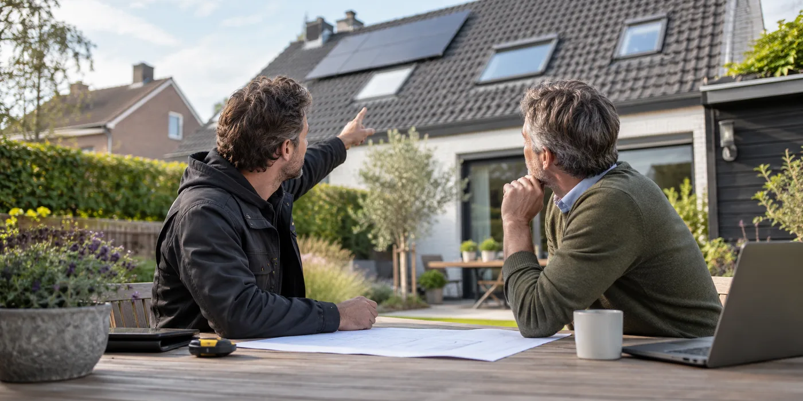

Laat de resterende daktoestand beoordelen
Vraag een inspectie van bedekking, aansluitingen en constructie voordat je het legplan vastlegt. Bespreek welke renovatie je de komende jaren verwacht. Op een plat dak vraagt de combinatie met PV onder meer aandacht voor belasting en afdichting. Een paneelofferte kan die dakbeoordeling niet automatisch vervangen.
Vergelijk de totale volgorde
Vraag afzonderlijk wat een gezamenlijke uitvoering inhoudt en wat latere demontage en herplaatsing kunnen betekenen. Vermijd een vergelijking die alleen de PV-prijs naast de dakprijs legt. Steigers, planning en overdracht tussen aannemers maken ook deel uit van je beslissing. Laat duidelijk aangeven wie de bevestiging op de vernieuwde dakopbouw beoordeelt.

Neem toekomstige isolatie mee
Als de dakopbouw later verandert, kan dat invloed hebben op aansluitingen en montage. Vertel de installateur daarom over isolatieplannen, dakramen en een aanbouw. Vraag hoe hij die informatie verwerkt. Een voorstel met iets minder panelen maar heldere renovatieafspraken kan beter passen bij je project dan een maximaal gevuld dak zonder toekomstplan.
Laat de grens tussen beide opdrachten tekenen
Vraag wie dakdoorvoeren, bevestigingspunten en aansluitingen uitvoert en welke controles voor hergebruik gelden. Een gezamenlijke offerte kan handig zijn, maar maakt verantwoordelijkheden niet overbodig. Neem de definitieve dakopbouw en het PV-legplan samen door. Als één van beide plannen verandert, moet de andere partij daarvan op de hoogte zijn. Daarmee voorkom je dat een ontwerp voor de oude situatie wordt uitgevoerd op een dak dat intussen anders is opgebouwd.
Een praktisch voorbeeld
Je plant volgend jaar nieuwe dakisolatie maar wilt dit najaar panelen. Laat een variant met gezamenlijke uitvoering vergelijken met twee afzonderlijke werven. Zo zie je welke werkzaamheden dubbel zouden gebeuren.
Illustratief scenario, geen klantcase.
Neem dit mee naar je gesprek
- Dakinspectie vóór legplan
- Verwachte renovaties besproken
- Kosten van latere herplaatsing
- Eén taakverdeling voor beide aannemers
Veelgestelde vraag
Moet elk dak vooraf vernieuwd worden?
Nee. Laat de toestand beoordelen en stem de PV-planning af op noodzakelijke of geplande dakwerken.
Bron en achtergrond
Buildwise: officiële of technische achtergrond bij dit onderwerp ↗
Geraadpleegd op 13 oktober 2026. De praktische checklist en het voorbeeld zijn redactionele uitwerkingen. Fabrikantinformatie geldt voor de beschreven producten; ze is geen algemene garantie voor andere systemen.
Wat betekent dit voor jouw woning?
Gebruik de calculator voor een eerste indicatie. Een vakman beoordeelt jouw situatie en bevestigt de uitvoering en definitieve prijs.
Bekijk de zonnepanelencalculator →